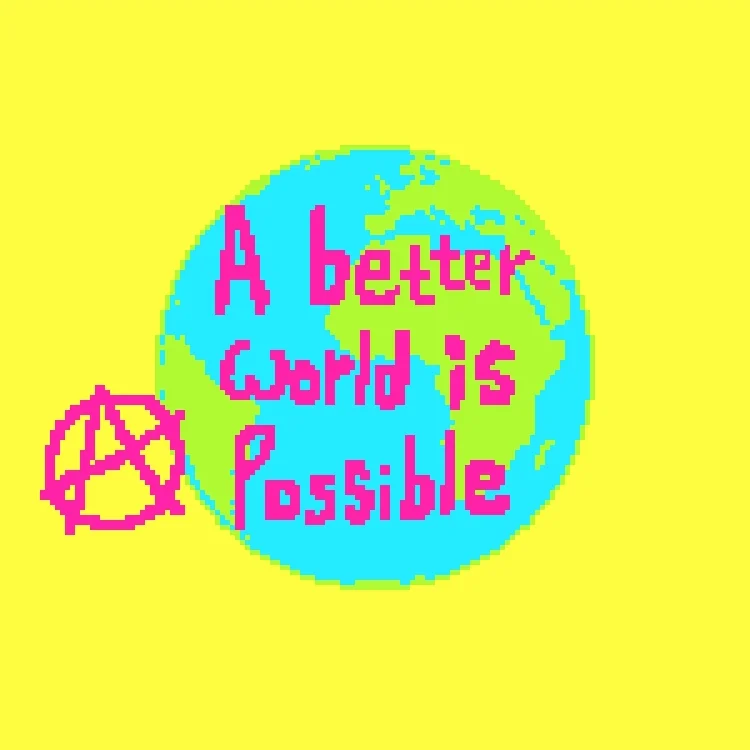

Reflections
- When I'm browsing the internet, the first place I end up at is usually Tiktok. I find that it is curated to me a little too well. I would also like to mention that although instagram reels is addicting as well, it does not hit like tiktok. Some other places I travel to in the World Wibe Web include, Facebook, Pinterest, Youtube, and LinkedIn
- As you saw on the last page, I used a google chrome extension to capture my rawest moments while exploring the internet. As you saw, I was caught lacking many times. Besides my camera constantly being greasy, half of the pictures are me eating. While this paints the picture that I am a slob that never stops stuffing his face, I think it is chalked up to the extension going off everytime I go to enjoy my enrichment time, which obviously involves food.

- As technology evolves, so does the web as well as the way we use it. I feel like in more recent years the web has become a corporate money funnel for everyone to support the 1%. As we have seen, everyone has moved mostly to social medias and away from personal websites and blogs. The nature of this evolution has resulted in a restrictive space for everyone to compare each others lives while also being tools for big companies to make money. If you use any social media you are restrained by the limitations they set. It has taken away the individuality that the web used to have. As well as this, just by using these social medias, these companies can use your data to sell and make a profit. They also use this data to advertise extremely specifically. For me, I have noticed I talk about obscure things and later that day they show up in my social media feeds as ads. I believe the internet should be for the people and not the corporations.
- If you missed it, when I touch some grass I like to take pictures to prove it to the internet. When I'm outside I am generally less in my head and more in the moment. On the contrary, the web is where I go to escape in my head. My life online does not reflect my life in the real world and that is because of the social pressures that come with social media. In person I am mildly awkward and pretty happy but if you only looked at my life online you might hopefully think I am a well-traveled mysterious artsy twink when that is not the reality. Everyones online presense is curated to how they want to be seen which takes away the authenticity of the real world.